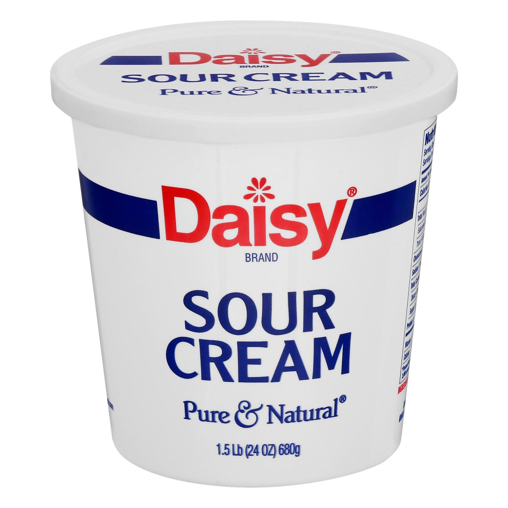
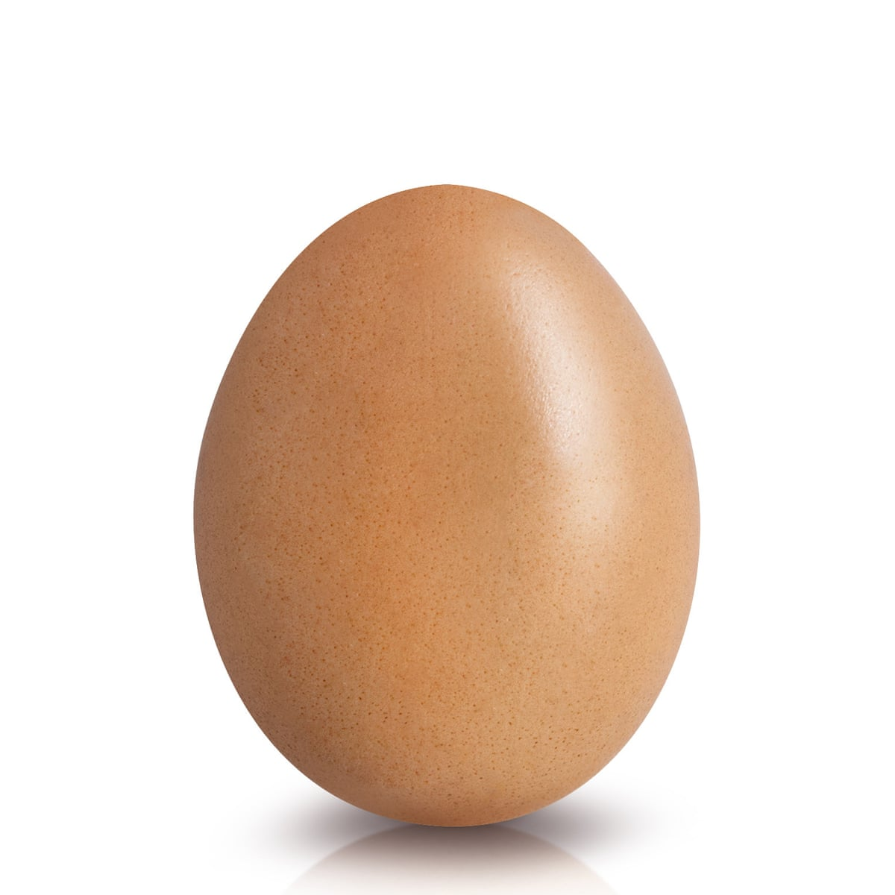

| Full-fat cream cheese |
32oz (two 16 oz containers) |
 |
Plop it in. Make sure you’re buying the blocks of cream cheese and not cream cheese spread. |
| Sugar |
1 cup |
 |
Mix it in. Not that much considering how many mouths you can feed with this dessert. Over-sweetened cheesecake is hardly cheesecake anymore. |
| Sour cream |
1 cup |
 |
Mix it in. Gives stability to the cheesecake. |
| Pure vanilla extract |
1 teaspoon |
|
Mix it in. Vanilla is always a good idea. |
| Eggs |
3 eggs |
 |
Beat eggs then mix in. Do not overmix the batter once the eggs are added. This will whip air into the cheesecake batter, resulting in cheesecake cracking and deflating.. |